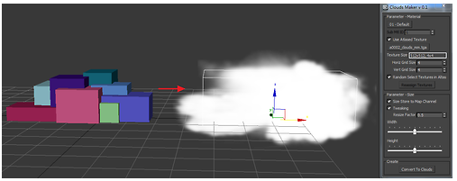
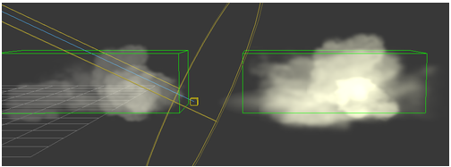
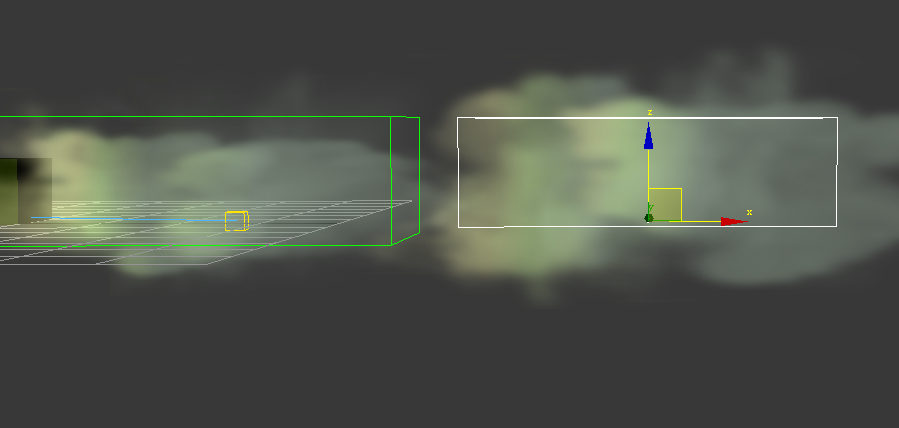
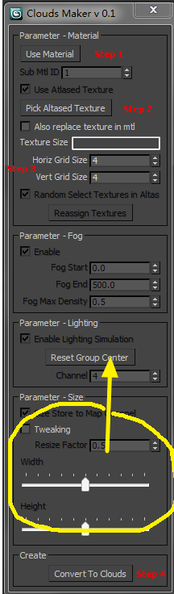

Clouds Maker
author: Xiaobin Huang (xiaobin.huang@gameloft.com)
This idea comes from http://www.ofb.net/~eggplant/clouds/
We use this to create clouds among the vally in aerial combat level.
This script creates billboards from a group of boxes.

And it also support lighting on clouds,

Light came from left.

The panel,

1. Select a billboard material (you could use iron_clouds.bdae attached, the IRON_CloudFogParams are fogstart, fogend, fogdensity_min (0~1) and fogdensity_max (0~1))
2. Get an atlased texture (also attached)
3. Select dim of atlas (4x4 grid here)
4. Select all the boxes and click convert to clouds.
5. You could control the size of cloud by resizing the helper "dummy_cloud_" and change th with and height in the yellow circle. Don't forget to click "Reset Group Center" after that to make lighting information correct.
Notice, the texture of billboard are selected randomly from atlased texture, so every time you click "Convert To Clouds" will get a different clouds.
texture got from http://www.ofb.net/~eggplant/clouds/
Options locked,
To control what information should put to map channels. (reduce vertex size)
And the function of letting artist to select textures of billboard from atlased one has not done yet...
Here I used 4 channels,
1. The texture coord to generate billboard in shader
2. The atlas texture coord (calculated from step 2 and 3)
3. The size of billboard (step 5)
4. The group center (for lighting calc).
Lighting,
The normal vector is group center to the billboard vertex generated (that why it needs to click Reset Group Center).
Reduce vertex size
1. If do not use atlased texture, channel 2 will be removed.
2. If do not use size information (the size will control by param in material), size channel will be removed.
3. If do not use lighting, the group center channel will be removed.
And all this should contact programmer to change the shader.
A default could shader used all the feature was provided in the folder.
You could right click on the script in the launcher and click on "Open Script Folder" to get them.